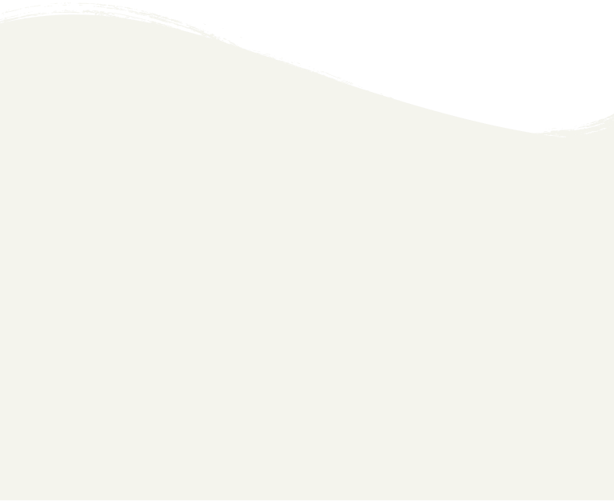
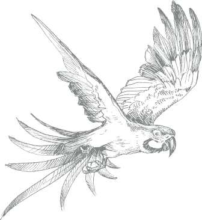
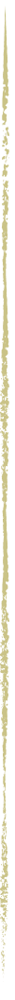
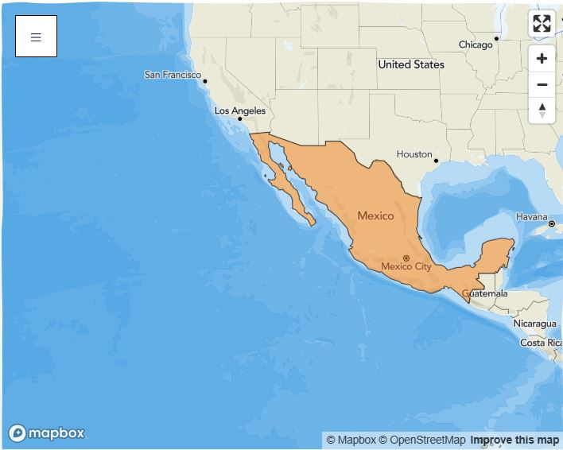

Explora nuestro trabajo

Nos enfocamos en proteger y conectar paisajes naturales en Ecuador, Perú, México, Bolivia y Colombia.
Los lugares que protegemos incluyen algunas de las mayores reservas de carbono y los ecosistemas más ricos en especies del mundo.
Apoya proyectos urgentes

